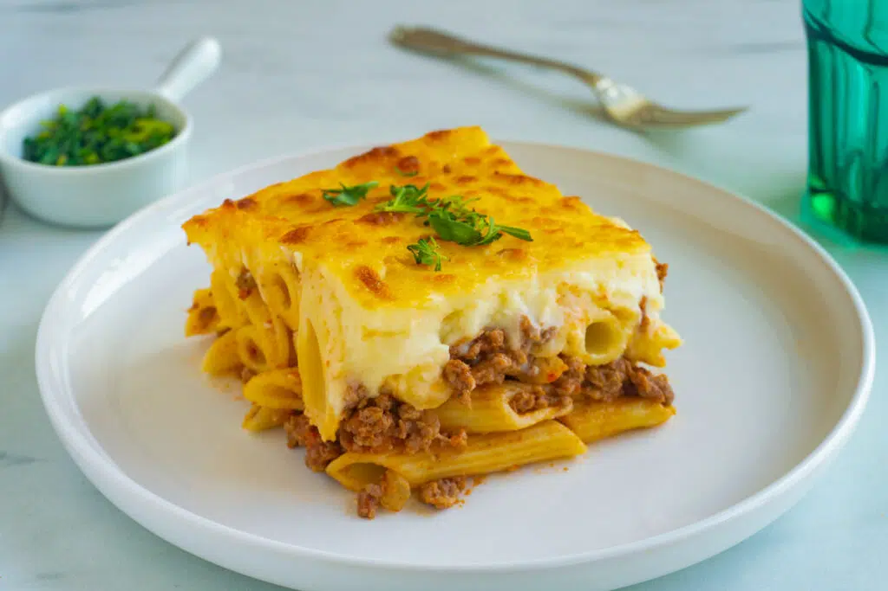

home
Macarona béchamel recipe

Description
Macarona béchamel is the Egyptian take on a Bechamel pasta bake. It's
usually made with a mix of penne pasta, a savory seasoned ground beef
filling, and a rich, creamy béchamel sauce. The layers are baked until
golden, creating a delicious combination of tender pasta and creamy sauce.
This hearty casserole is a favorite at family gatherings and special
occasions and is often served with a fresh green salad.
Ingredients
- 500 g penne or macaroni pasta
- 500 g ground beef
- 1 medium onion, finely chopped
- 2 cloves garlic, minced
- 2 tablespoons vegetable oil
- 1 teaspoon salt
- 1/2 teaspoon black pepper
- 1 teaspoon ground cinnamon (optional)
- 4 tablespoons butter
- 4 tablespoons all-purpose flour
- 4 cups milk
- 1 egg
- 1 cup shredded mozzarella or cheddar cheese (optional)
Directions
- Cook the pasta until just al dente, then drain and set aside.
- Heat the oil in a skillet and cook the onion until softened.
-
Add the garlic and ground beef, cooking until the meat is browned.
- Season with salt, black pepper, and cinnamon if using.
- In a saucepan, melt the butter and whisk in the flour.
-
Gradually add the milk while whisking until the sauce becomes smooth and
thick.
- Remove the sauce from the heat and stir in the beaten egg.
-
Spread half of the pasta in a baking dish and cover with a layer of the
meat mixture.
-
Add the remaining pasta and pour the béchamel sauce evenly over the top.
- Sprinkle with cheese if desired.
-
Bake at 375°F (190°C) for about 40 to 45 minutes, or until the top is
golden brown.
- Let the casserole rest for 10 minutes before serving.